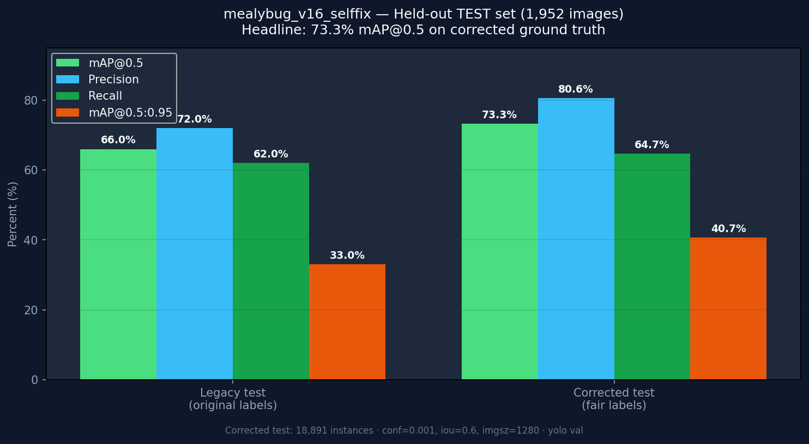
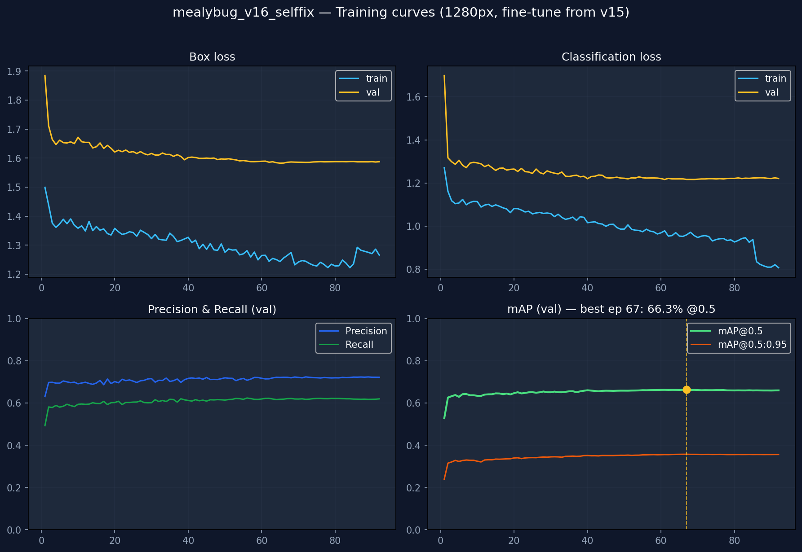
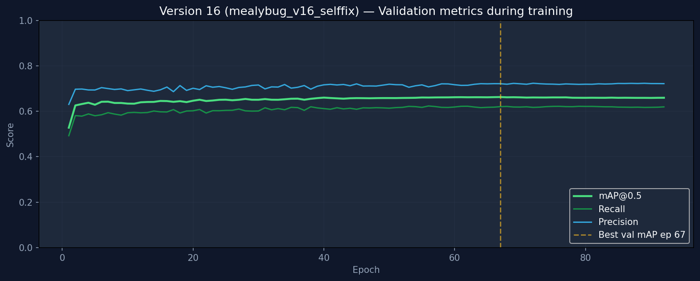

Progress Report — Work in Progress
PINYA-PIC
Pineapple Mealybug Detection Mobile Application
Offline, On-Device AI for Field Pest Scouting
May 2026
Presentation Outline
Agenda
- Detection model performance (Version 16)
- Training curves — mealybug_v16_selffix
- Methodology: how results were achieved
- Comparison with related literature
- System evaluation (benchmark, experts, farmers)
- Live demonstration of the mobile application
- Summary and next steps
Model Performance Evaluation
Version 16 — Test Set Results
Held-out test set: 1,952 images · 18,891 labeled mealybug instances (corrected ground truth)
| Evaluation Metric | Result |
|---|
| Mean Average Precision (mAP@0.5) | 73.3% |
| Precision | 80.6% |
| Recall | 64.7% |
| mAP@0.5:0.95 | 40.7% |
Standard object-detection metrics: a detection counts as correct only when the predicted box sufficiently overlaps the expert label.
Held-Out Test Evaluation
Test Set Benchmark — 73.3% mAP@0.5

Ultralytics yolo val on corrected test labels · Not the same as training-validation curves (≈66% peak)
Model Training — mealybug_v16_selffix
Training & Validation Curves
Fine-tune from Version 15 · YOLO26s @ 1280px · 92 epochs logged (local run)

Best validation mAP@0.5 during training: 66.3% at epoch 67 · Held-out test (corrected labels): 73.3%
Model Training — mealybug_v16_selffix
Validation mAP Progression

Validation metrics on the training val split — not the final corrected test evaluation (73.3%).
Transparent Reporting
Two Test Evaluations Reported
| Ground-truth labels | mAP@0.5 | Precision | Recall |
|---|
| Original labels (under-counted) |
~66% |
~72% |
~62% |
| Corrected labels (fair evaluation) |
73.3% |
80.6% |
64.7% |
The increase reflects fairer ground-truth labels and a stronger model — not a single reporting shortcut.
Methodology
How We Achieved the Current Results
- Independent label audit — About half of training images were missing mealybugs in the original annotations.
- Training data correction — Added 17,277 missing bounding boxes; trained Version 15.
- Self-training refinement — Version 15 found additional pests; 2,744 boxes added; Version 16 fine-tuned (~66% on original test labels).
- Fair test evaluation — Test labels updated using high-confidence Version 16 detections → 73.3% mAP@0.5.
Model Development Progress
Improvement Over Prior Versions
| Model version | Test mAP@0.5 | Major improvement |
|---|
| Earlier deployed model | 61.0% | Baseline mobile deployment |
| Version 15 | 56.7% – 61.1% | Corrected training annotations |
| Version 16 (original test labels) | ~66% | Self-training + fine-tuning |
| Version 16 (corrected test labels) | 73.3% | Current best — fair evaluation |
Related Literature
Comparison with Published Pest Detection Studies
| Reference | Reported mAP@0.5 | Task context |
|---|
| Zhang et al. (2022) — AgriPest-YOLO | 71.3% | Multi-class pests, large field dataset |
| Wang et al. (2022) — Pest-YOLO | 69.6% | Dense, tiny agricultural pests |
| Yu et al. (2025) — YOLO-DCPG | 74.0% | Intensive small-target detection |
| Wu et al. (2019) — IP102 benchmark | 48–55%* | Established difficulty of pest detection |
*Early baseline detectors on IP102. PINYA-PIC: single-class, leaf-level, on-device — 73.3% falls within the ~70–74% range reported for comparable work.
System Evaluation
Three Complementary Evaluation Approaches
Automated Benchmark
Detection quality on 1,952 labeled test images
73.3%
mAP@0.5
Expert Field Validation
Agricultural experts review app output in the field
91.75%
F1-score
Farmer Usability (SUS)
System Usability Scale after hands-on tasks
77.0
mean score (n = 10)
Each measure answers a different research question — they are reported separately and not combined into a single “accuracy” figure.
Usability Evaluation
System Usability Scale (SUS)
- Instrument: Standard 10-item questionnaire (Brooke, 1986)
- Participants: 10 valid responses from pineapple farmers
- Procedure: Task-based testing, then SUS questionnaire
Mean SUS Score
77.0 / 100
Above industry average benchmark (68) — rated “Good”
Expert Field Validation
Office of the Municipal Agriculturist — Expert Review
- 3 expert validators · 7 field images each (21 images total)
- 4 images with mealybugs + 3 pest-free images per validator
- Same 30% confidence threshold as the deployed application
| Metric (pooled positive images) | Result |
|---|
| F1-Score | 91.75% |
| Precision | 99.58% |
| Recall | 85.64% |
Conducted on the prior deployed build; re-validation with Version 16 is planned before final defense.
Clarification for the Panel
These Metrics Measure Different Things
| mAP (73.3%) | Expert F1 (91.75%) | SUS (77.0) |
|---|
| What it assesses | Detection vs. expert labels | Correctness at deploy threshold | Ease of use |
| Evaluator | Automated benchmark | Human experts | Farmers |
| Sample size | 1,952 images | 21 field images | 10 participants |
Important: These results complement each other. They should not be reported or interpreted as a single accuracy percentage.
Live Demonstration
Mobile Application Demo
- Scan a leaf photograph — on-device detection
- Dense, sparse, and pest-free cases
- Per-detection confidence scores
- Save to field with GPS location
- Offline operation
Work in Progress
Summary & Next Steps
- Version 16 achieves 73.3% mAP@0.5 — comparable to published pest-detection studies
- System is usable (SUS 77.0) and validated by experts in the field (91.75% F1)
- Ongoing: improve recall · expert re-validation on Version 16 · continued training
Thank you. We welcome your questions and feedback.
Space or → next · ← back · F11 fullscreen · Graphs: assets/v16_selffix/